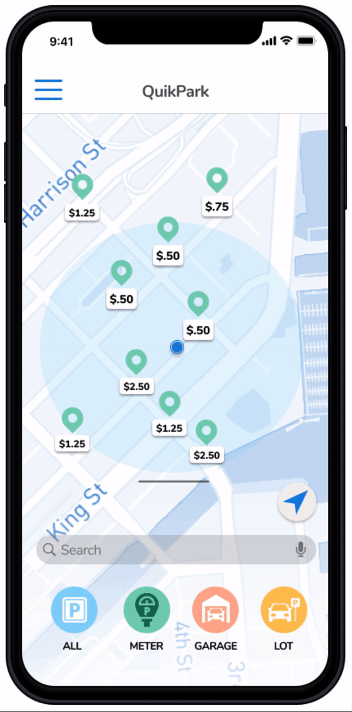
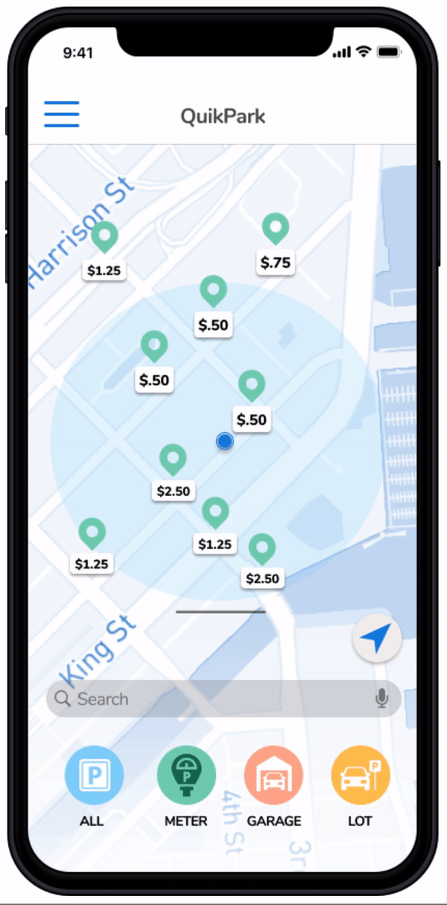

mylan le.
designer & illustrator
quikpark.
Role: UI/UX designer
Task: Research, Wireframing, Prototyping, Development, User Testing
Tools: Figma, InVision
Timeline: 2 months
Collaborators: Mylan Le, Jessica Gregorio, Ines Hamadi
the problem.
Parking can be difficult and time-consuming to find in the city. With very limited available parking spots, drivers feel stressed, frustrated, and possibly arrive late to their destination. They want to find available, cheap, and reliable spots quickly. How might we develop a tool that will help drivers find parking spots easily?
user research.
We interviewed five users in order to learn about their views and behaviors about parking. We discovered that there was a trend on individuals who expressed that parking can be very expensive and that it can be very time consuming and difficult to find available spots around busy cities.
{kind=link}

We also sent out a survey to capture quantitative results. We received 34 responses and discovered that 70.6% (24 people) find it difficult to find a parking spot and 64.7% (21 people) spend roughly 15-20 minutes searching.

After collecting data from my interviews and survey, we learned that the majority experience some sort of frustration when it comes to finding parking spots in cities whether that may be the pricing, time spent on searching for a spot, or the limited availability in certain areas.
{kind=link}
{kind=link}
meet jim, who hates parking in the city.
{kind=link}
let's join jim on his journey to find a parking spot.
{kind=link}
competitive analysis
Spot Angel is a mobile app that provides free parking, street parking, and garage deals, which we believe is a great competitor to analyze for this project.
• Competitve Advantage: Shows a map of meter parking spots around the map, notifies you with updated events, rules, regulations, and clean-up schedules, and an option to pay through phone.
• General Notes: The UI is very simple and clean to the eyes. It's easy to use, but I am concerned about how users will access it while driving. I wonder, "How accessible is this mobile app? Will I be using one hand for this while driving?".
{kind=link}
user flow.
We started to sketch my first user flow to see how could our app work step by step. We want to make sure Jim reaches his goal easily and quickly. I decided to opt out the Sign Up Screen and have Jim go straight to the homepage.

lo-fi wireframes.
We then went the phase of sketching my wireframes with a pencil and paper to get a general idea of how QuikPark was going to look. Before working on the visual and content design, I wanted to have the basic structure of the app. I kept in mind of accessibilty and how it would affect the user when searching for parking spots inside their car.
{kind=link}
digital wireframes: a/b testing
User Flow and wireframe sketches helped us visualize how our concept is going to look and if the flow made sense. From there, we created two digital wireframes A/B testing with different functions. We mainly wanted to figure out where to place the filter and search bar on the homepage for accessibilty reasons.
{kind=link}
We then tested both of the possibility with our clickable prototype and kept the one who worked best for users. From the first testing results Test A was the best option because it was easier to find the filter button, the bottom search bar was better for one handed use and it was also clearer and simpler to use.
clickable prototyping & user testing


Check me out for the Lo-Fi InVision Link :)
testing analysis.
By conducting the second user test and collecting the data we also discovered few main problems that users encountered:
1. Users were confused on the the splash page.
2. The filter button was not clear.
3. Users didn’t know how to pay for parking.
4. Users didn’t know how to locate themselves.
iterations.
From there, we iterated our user flow and our wireframe to make those problems solved:
1. On the Splash page, we added information and indicated button.
2. We moved the filter button from top right to left bottom near the search bar to make it more visible.
3. We added the pay button on top of page and bigger.
4. We added a pop up button asking to allow location.
5. Additonal Add-on: We added a voice-command feature for more accessibilty.
hi-fi prototyping.
{kind=link}
{kind=link}
The Homepage: The first thing Jim will do is to open up the app and will bring him to a screen where we can log in or go straight to navigating a parking spot. Since Jim is in a hurry, he wants to go straight to the homepage. Jim has the option to turn on location before entering the homepage.

Filtering: Once he is at the homepage, he can filter out exactly what he wants, either meter parking, parking garage, or a parking lot. This is located on the bottom screen with the four icons. There is also an option to see all. QuikPark also provides an option to filter out parking spots according to how long you want to stay and how much you plan to spend on parking.

Searching: Jim can search at his current location or another location further away using his keyboard or voice command. Once Jim finds a potential spot, Quickpark can provide him with information about that selection including towing regulations, street clean up scheduling, hours of availability, and the directions to the parking spot.
 

Payment: Once Jim has committed on a parking spot, he has the option to pay there or pay through QuikPark. Jim has successfully found a parking spot!
 Check me out for the Hi-Fi InVision Link :)
Check me out for the Hi-Fi InVision Link :)
conclusion & future development.
We believe the following should be addressed in future development:
• Think about feasibility of showing available meter spots live and not just a map
• More in-depth user flows (log-in, sign up, profiles and reservations).
• Discuss how we could keep up with garage price changes.
• Partnering with garages for more competitive and cheaper prices
• Having a reserved section with spots in garages for QuikPark
thank you! :)
If you have any questions/comments regarding to this case study, feel free to email/contact me!